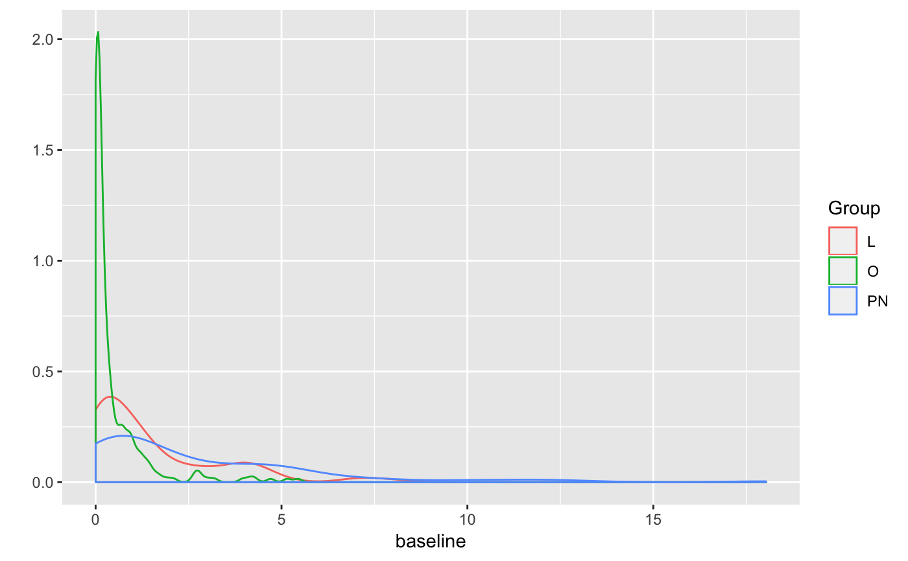

create_simple_summary_array creates a matrix containing
every 7 time point summarised from the smooth psth.
create_simple_summary_array creates a list of matrices,
one for each cell, containing every time point in the smoothed PSTH (rows)
x every possible odour (cols).
create_raw_summary_array(x = physplitdata::smSpikes, cells = NULL) create_simple_summary_arrays(x = physplitdata::smSpikes, cells = NULL)
| x | A list of smoothed psth objects for cell/odours combinations.
Defaults to |
|---|---|
| cells | A character vector of cell names enabling calculation of summary_array for a subset of the data. |
Other summary_array: createSummarySpikesMat
summary_array=create_raw_summary_array() # histogram of baseline firing for all cells / odours hist(summary_array[,,'baseline'])# collapse all data for different odours for the same cell # i.e. average baseline firing rate for each cell baseline_cell=rowMeans(summary_array[,,'baseline'], na.rm=TRUE) hist(baseline_cell, xlab='Firing freq /Hz')# examples of calculating summary for all cells summary_array3=create_raw_summary_array(cells=c("nm20140714c1", "nm20150305c0", "nm20141128c0")) # Plot density distributions by cell group pns=subset(PhySplitDB, Group=='PN' & cell %in% names(smSpikes))$cell physplit=PhySplitDB[match(names(smSpikes), PhySplitDB$cell), ] rownames(physplit)=physplit$cell physplit$baseline=baseline_cell[physplit$cell] library(ggplot2) qplot(baseline,col=Group, data=subset(physplit, Group%in%c("L","O","PN")), geom='density')